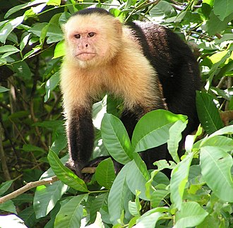
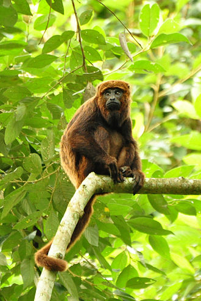
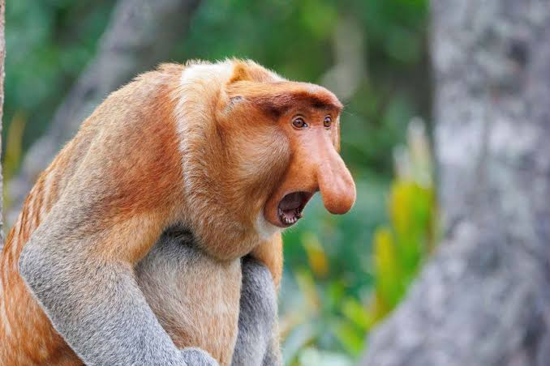

Gatunki Małp
Strona główna
Gatunki
Siedlisko
Dieta
Zachowanie
Ochrona
Szczegóły popularnych gatunków małp
Nazwa gatunku
Region
Dieta
Obraz
Kapucynka
Ameryka Środkowa i Południowa
Owoce, owady, małe zwierzęta

Wyjec
Ameryka Południowa
Liście, owoce, kwiaty

Makak
Azja i Afryka
Owoce, nasiona, owady
Nosacz
Afryka Środkowa
Liście, owoce, nasiona

Galeria